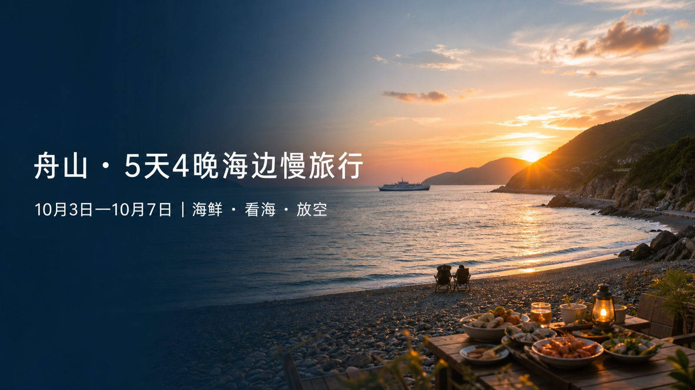

DAY 0110月3日周六
01
上海 → 舟山 · 住沈家门
抵达沈家门，先把海鲜吃明白
吃
行
从上海长宁出发，前往沈家门
约270公里。平时3.5小时，国庆按5小时预留；可在北岸或慈溪服务区休息。
宿
亚朵酒店办理入住
舟山普陀半升洞码头亚朵酒店
浪
午后休息，慢逛沈家门
楼下是宝龙天地，周边可逛青龙山公园和沈家门海鲜排档街。
鲜
渔港海鲜大排档
第一晚不赶路，挑一家顺眼的排档好好吃。
宿
回酒店休息
酒店有洗衣房，适合把第一天的衣物及时洗掉。

两个吃货的海边假期
从沈家门的第一顿海鲜，到大青山最后一场日落。
10月3日出发，10月7日回家。
睡到自然醒，吃好每一顿，下午去海边，傍晚等日落。五天只安排四个主场：沈家门、朱家尖、普陀山和大青山。
上海 → 舟山 · 住沈家门
约270公里。平时3.5小时，国庆按5小时预留；可在北岸或慈溪服务区休息。
舟山普陀半升洞码头亚朵酒店
楼下是宝龙天地，周边可逛青龙山公园和沈家门海鲜排档街。
第一晚不赶路，挑一家顺眼的排档好好吃。
酒店有洗衣房，适合把第一天的衣物及时洗掉。
小乌石塘 → 东沙 → 印象普陀 · 住朱家尖
亚朵含早餐，按度假节奏慢慢来。
12:00出发，约30分钟抵达；免门票、免停车费。带水桶和挖沙工具找小螃蟹、捡贝壳。
从小乌石塘约17公里、30分钟。东沙成人票35元/人，已包含在联票中。
排档或简餐，给晚上的演出留足时间。
She Say 暮莲轩智能泳池山影度假民宿，离剧院约700米。
朱家尖印象普陀大剧场。东沙＋乌石塘＋演出联票198元/人，建议提前一个月订。
蜈蚣峙码头 → 普陀山 · 住漳州湾
早餐已含，继续保持不早起的旅行节奏。
民宿到蜈蚣峙码头约3公里、10分钟；船程约30分钟。
南海观音、普济寺、法雨寺、慧济寺。建议索道上慧济寺，再慢慢徒步下山到法雨寺；寺院可免费领三支清香。
联票含普陀山门票、往返船票与观世音演出，305元/人，提前一个月订。
Sunset Whisper 初夏里一线落日海景泳池美宿，连住2晚；有洗衣房，近漳州湾沙滩。
民宿周边餐厅多，饭后去漳州湾看看海。
大青山自驾环线 · 继续住漳州湾
民宿含早餐，上午留白。
成人票100元/人，已订10月6日。
入口 → 四季花海 → 里沙沙滩 → 青沙 → 房车营地 → 牛头山 → 猫跳 → 喷水洞 → 筲箕湾渔村。牛头山看全景，筲箕湾赶海等日落。
沿途慢开，给海岸线多留几眼。
最后一顿海岛晚餐，按当天想吃的海鲜灵活选。
舟山 → 上海
早餐已含，收拾行李、退房。
国庆返程预留5小时，途中按路况休息。
原表已列支 ¥5,014，总预算 ¥6,000，还留有 ¥986 机动空间。
第一、三、四晚有洗衣房，衣物不必带得太重；海边十月风大，薄外套一定要有。
记得订两组联票：东沙＋乌石塘＋《印象普陀》；普陀山门票＋往返船票＋观世音演出。